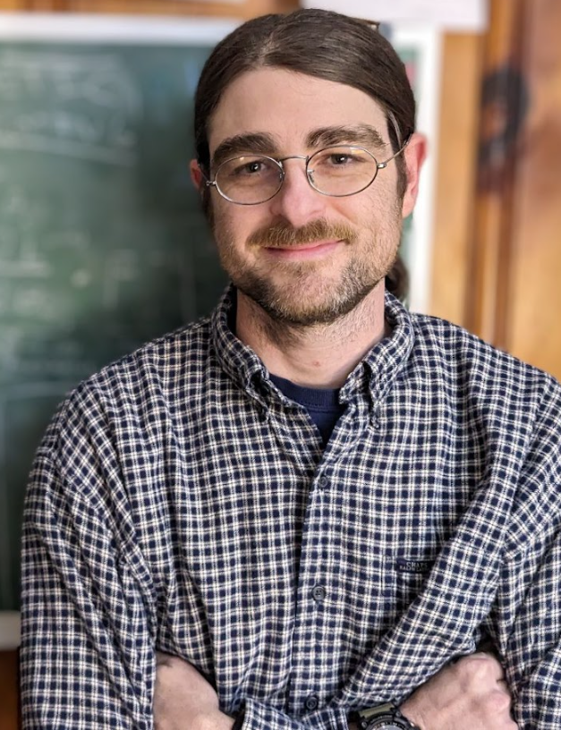

Welcome to Bryce's Webpage

My research focuses on intelligence and representation across biological and artificial systems. I am a PhD student in philosophy of science at the University of Missouri working under the direction of Gualtiero Piccinini. My work lies mainly at the intersection of computational neuroscience, AI, and bioinformatics, with a particular focus on the structural organization of neural representation and the use of applied category theory to model it.
I am also a member of the Digital Biology Lab at the University of Missouri, where I am developing an AI architecture for classifying protein folds associated with neurodegenerative disease. More broadly, I am interested in connecting research on representation and computation with clinically relevant biological modeling.
I organize the Mind and Computation Research Group, a small research group focused on AI, computation, and related topics. We are always happy to welcome new members, please get in touch if you see any research overlap.